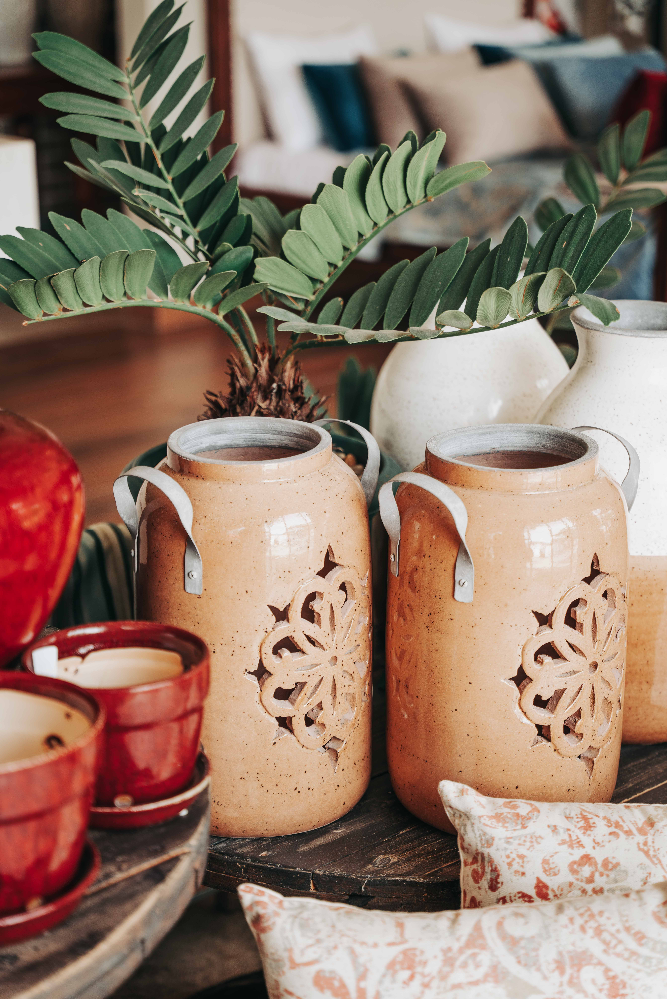
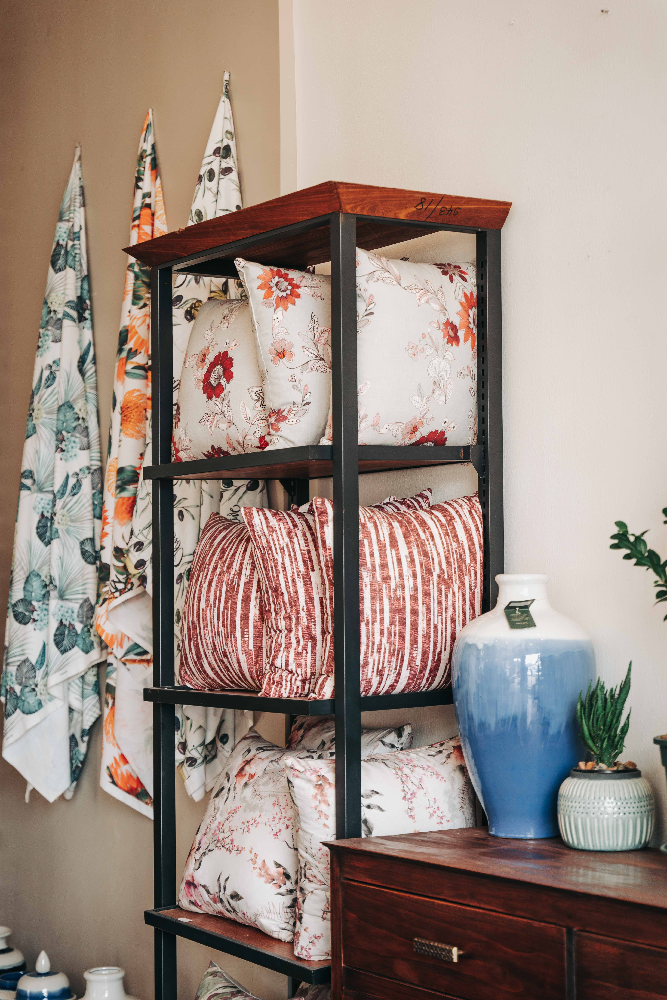
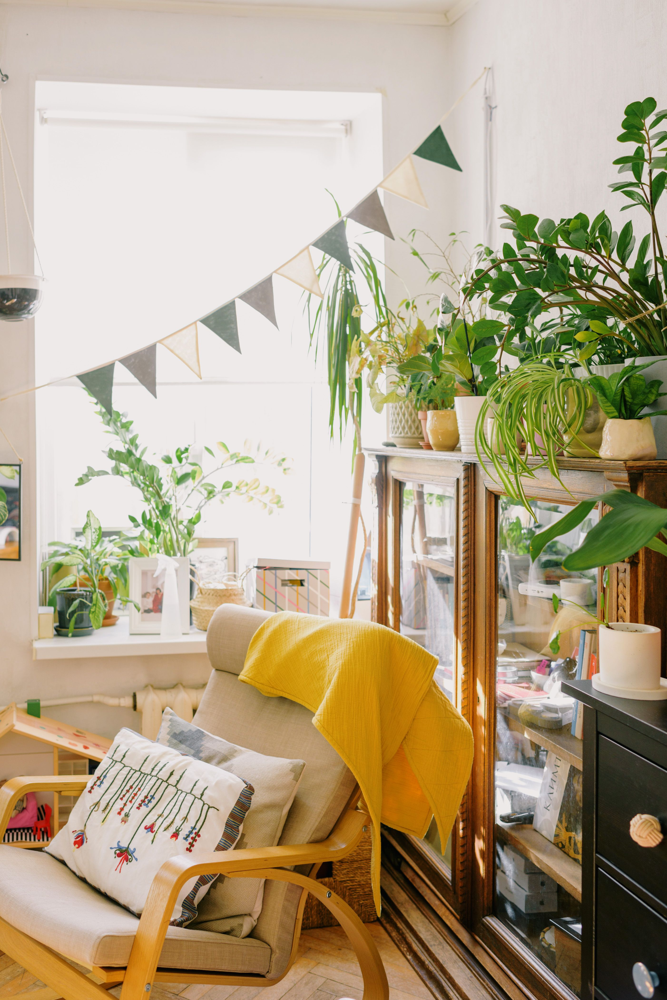

In This Article
- Introduction
- Plan the Layout Before Decorating
- Choose Comfortable, Weather-Resistant Furniture
- Create Shade and Protection
- Use Plants for Freshness and Privacy
- Light the Patio for Evening Use
- Add Details Without Creating Clutter
- Keep the Patio Pleasant Throughout the Year
- Adapt the Project to Everyday Life
- Make a Final Check Before Buying or Installing
- Frequently Asked Questions
- Conclusion
Introduction
A cozy patio begins with practical planning. A comfortable layout, durable furniture, useful shade, suitable plants, thoughtful lighting, and a few well-chosen details can make an outdoor area much easier to enjoy. Before buying or moving anything, measure the available space, observe the conditions at different times of day, and think about how the household will actually use the patio.
The objective is not to reproduce an inspiration photograph exactly. A patio that works for years needs to reflect its dimensions, climate, sunlight, wind, maintenance requirements, budget, and daily routines. When function is resolved first, decoration becomes easier and the finished space is more likely to remain comfortable instead of becoming crowded or difficult to maintain.
Plan the Layout Before Decorating
Start by measuring the patio and locating doors, windows, drains, steps, and the routes people use most often. Then decide on the main function: outdoor meals, conversation, rest, container gardening, or a combination of activities. In a small patio, choosing one primary purpose can prevent the area from filling with furniture that is rarely used.
Keep circulation clear. People should be able to enter, sit down, and move around without constantly avoiding chairs or pots. In a larger patio, different zones can be suggested with an outdoor rug, groups of planters, or furniture orientation rather than permanent partitions. In a narrow space, positioning larger furniture near the perimeter can free the center and improve movement.
Observe the patio at different hours. Notice where direct sun falls, where wind is strongest, which areas remain cooler, and where privacy is best. This information helps determine where a dining table, bench, or lounge chair will be most comfortable. A layout based only on appearance can be disappointing if it ignores the actual conditions.
Choose Comfortable, Weather-Resistant Furniture
Furniture should fit both the dimensions of the patio and its environmental exposure. Wood, metal, synthetic fibers, and other outdoor materials behave differently in sun, rain, humidity, and temperature changes. Before purchasing, review maintenance requirements and decide how much regular care you are willing to provide. An attractive piece that requires more upkeep than expected can quickly become inconvenient.
Comfort also depends on scale. A table that is too large can block circulation, while undersized seating may become uncomfortable during longer gatherings. Folding, stackable, or modular furniture is particularly useful when the patio needs to change functions. These pieces can create additional seating when guests arrive and then be stored or rearranged to free space.
Outdoor textiles add comfort and color, but they should be easy to clean or store. Removable cushion covers and fabrics intended for exterior use can simplify care. If the patio is uncovered, a storage box or nearby indoor space for cushions and textiles during severe weather can help keep them in better condition.
Create Shade and Protection
A patio exposed to strong sun may be uncomfortable during the hottest hours. Umbrellas, retractable awnings, pergolas, and vegetation can provide shade, but the solution should match orientation, wind exposure, available space, and local conditions. A movable umbrella offers flexibility, an awning can protect a larger area, and a pergola can become a permanent structure that helps organize the patio.

Shade should not unnecessarily block natural light from nearby rooms. Before installing a permanent cover, consider how it will affect windows throughout the year. In some locations, an adjustable solution that can be opened during cooler months and extended during hot weather offers greater flexibility. Lightweight or fabric elements must also be secured appropriately for local wind conditions.
Climbing plants can provide natural shade and soften a structure, but they need time to grow and require maintenance. Consider their mature weight, growth habit, and pruning needs before training them over a pergola or trellis. Combining a structural shade solution with vegetation can provide immediate comfort while plants establish gradually.
Use Plants for Freshness and Privacy
Plants soften hard surfaces and make a patio feel more alive. Choose them according to sunlight, climate, wind, and container size rather than appearance alone. Instead of purchasing many unrelated small plants, it can be more effective to combine a few structural plants with smaller varieties and seasonal flowers.
Grouping pots can make watering easier and create stronger visual impact. Different container heights or plant forms add depth, but repeating a material, color, or plant type can keep the arrangement coherent. When floor area is limited, walls, railings, shelves, and appropriate vertical structures can increase planting space without blocking circulation.
For privacy, large containers with suitable shrubs or climbing plants on a trellis can filter views without completely enclosing the patio. Research mature root and branch growth before choosing. A plant that looks compact at the nursery may require substantially more space after several years.
Light the Patio for Evening Use
Outdoor lighting should make movement safe and create atmosphere without making the patio excessively bright. Soft general lighting can be complemented by carefully positioned light near steps, routes, or dining areas. String lights and portable lamps may add warmth, while directional lighting can highlight selected plants or textures.

Any electrical equipment should be suitable for outdoor use and for the level of water exposure at its location. Improvised cables, plugs, and connections are not an appropriate permanent solution. When permanent electrical work is required, use qualified assistance as appropriate to local requirements. Safety is more important than decorative effect.
Solar lights can be useful in some areas, but performance depends on how much sunlight the panel actually receives. Testing one or two units in the intended position before purchasing many can prevent disappointment. Different light sources can then be combined according to whether the patio is being used for dinner, quiet conversation, or simple nighttime circulation.
Add Details Without Creating Clutter
Small details can give the patio personality. An outdoor rug, a few distinctive planters, coordinated textiles, or a useful tray may be enough to transform the atmosphere. Too many accessories, however, reduce usable space and increase cleaning and storage needs. Choose fewer elements with a clear purpose rather than filling every available surface.
Color can be introduced through plants and textiles, which are easier to change than the main furniture. A relatively neutral base can be refreshed with small seasonal adjustments. Natural-looking materials, fibers, and wood can add warmth when they are suitable for the local outdoor conditions and maintained appropriately.
Storage is part of the design as well. Watering cans, small tools, cushions, and accessories need a defined place. A bench with internal storage or a compact outdoor cabinet can help keep the patio clear. A tidy space often feels more welcoming because the functional surfaces remain available for everyday use.
Keep the Patio Pleasant Throughout the Year
A welcoming patio needs a maintenance routine proportionate to its materials and climate. Sweeping leaves, cleaning surfaces, and checking textiles before dirt accumulates can keep larger cleaning sessions from becoming necessary. The frequency will depend on vegetation, weather, and whether the patio is covered.

At seasonal changes, inspect furniture screws and joints, protective finishes, corrosion, and signs of persistent moisture. Plants may also need pruning, repotting, or seasonal protection. Carrying out these checks before periods of heavy rain, heat, or cold can help prevent deterioration and keep the space ready for use.
Not everything has to remain outside all year. Storing textiles, umbrellas, or accessories during periods when they are not used can extend their useful life. A flexible patio that changes with the seasons and activities is often more practical than one designed as a completely fixed composition.
Adapt the Project to Everyday Life
Before investing heavily, use the patio for several days with a temporary arrangement. Existing chairs, boxes representing planters, or tape marking the footprint of a future table can reveal whether the idea works. This trial can show where shade is necessary, which paths need to stay open, and which part of the patio feels most comfortable later in the day.
Budget is usually better spent first on the elements that directly affect use: comfortable seating, stable surfaces, necessary shade, and appropriate lighting. Decoration can be added afterward. Buying many accessories before solving basic comfort often produces a patio that looks finished but does not function well in daily life.
Consider who will use the area. Children, pets, older adults, and guests may benefit from stable furniture, wider routes, or surfaces selected with safety and maintenance in mind. Adapting the patio to its actual users makes it more likely to be enjoyed regularly.
Make a Final Check Before Buying or Installing
Walk mentally through an ordinary day on the patio. Check where someone will place a drink, whether chairs can move without colliding, whether people can pass when seats are occupied, and where objects that should not remain outdoors will be stored. These simple actions can reveal problems that are not obvious in a floor plan.
Also observe how water behaves during rain or cleaning. Drains must remain accessible, and furniture should not prevent water from leaving the area. If you add rugs, large pots, decking, or other coverings, make sure they do not create places where water remains trapped. A patio that drains and dries effectively is generally easier to clean and maintain.
Finally, leave room for change. Household needs may evolve, and plants will grow. A flexible layout makes it possible to move a table, add a seat, or remove a planter without redesigning the entire space. Adaptability is one of the most useful qualities for keeping a patio comfortable over time.
Frequently Asked Questions
What should I do first to improve a patio?
Measure the area, observe sun and wind, and decide how the patio will primarily be used. With that information, plan the layout before buying furniture or decorations.
How can I make a small patio feel cozy?
Prioritize one main function, use furniture that fits the scale, take advantage of vertical planting where appropriate, and add soft lighting and a few textiles without blocking circulation.
What type of furniture is best for a patio?
Choose furniture designed for outdoor use, correctly sized for the available space, and compatible with the amount of maintenance you are willing to provide. The ideal material depends on climate and exposure.
Balance Comfort, Appearance, and Maintenance
A patio becomes easier to enjoy when attractive choices also support practical routines. Leave useful surfaces free, keep frequently used items within reach, and avoid placing delicate accessories where they must constantly be moved because of sun, rain, or circulation. The best arrangement is one that remains convenient after the initial decorating phase.
Review the patio after several weeks of real use. If chairs are always moved to another position, a planter blocks the preferred route, or a shaded corner is used more than the original seating area, treat that behavior as useful information. Adjusting the layout to actual habits can improve the space more effectively than adding more decoration.
Balance Comfort, Appearance, and Maintenance
A patio becomes easier to enjoy when attractive choices also support practical routines. Leave useful surfaces free, keep frequently used items within reach, and avoid placing delicate accessories where they must constantly be moved because of sun, rain, or circulation. The best arrangement is one that remains convenient after the initial decorating phase.
Review the patio after several weeks of real use. If chairs are always moved to another position, a planter blocks the preferred route, or a shaded corner is used more than the original seating area, treat that behavior as useful information. Adjusting the layout to actual habits can improve the space more effectively than adding more decoration.
Conclusion
Creating a cozy and functional patio works best when the design starts with real use. Measure the space, observe environmental conditions, prioritize circulation and comfort, and choose solutions that can be maintained without unnecessary effort. There is no need to transform everything at once. Begin with changes that solve clear needs, test how they perform, and add decorative details afterward. A patio feels most welcoming when appearance supports comfort, order, flexibility, and everyday use.